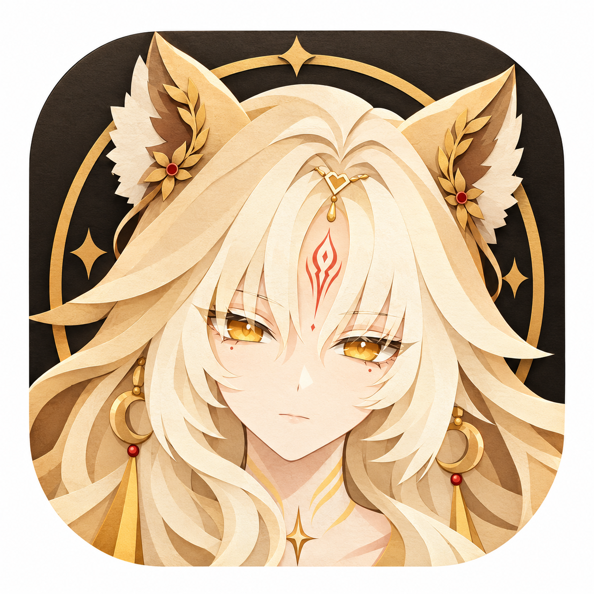

WuWaConfig
Android app for Wuthering Waves performance optimization — analyzes device logs, generates optimized Engine.ini configs, boosts FPS, tunes graphics, tracks gacha pity, and analyzes battle stats. Privacy-first, no telemetry, no ads.
Features
Config Generator
8 presets from Potato to Cinematic. Analyzes device log, SmartBrain scores your hardware, generates 5 optimized INI files: Engine.ini, DeviceProfiles.ini, GameUserSettings.ini, Scalability.ini, Hardware.ini. 19 toggleable options including 120 FPS unlock, Ultra quality, VSync, Vulkan safety, HZB occlusion, and 23 experimental CVars.
Pity Tracker
Fetches gacha history from Kuro’s official API. 11 pool types including Character/Weapon/Standard events. 50/50 and 75/25 prediction, soft pity detection (66 for character, 57 for weapon), hard pity countdown (80/70). Background polling with notification. 12-hour cache.
Battle Stats
14 battle counters extracted from Client.log: battles fought, echoes collected, dodges (forward/back/counter), deaths, role changes, teleports, staggers, stamina used, echo skills, transforms, month cards. 100% file coverage via parallel partition reads.
Smart Brain Scoring
Algorithm scores your device 0–100 with ~20 weighted signals: GPU tier (+30 to -20), RAM (+8 to -15), Vulkan (+8), FPS drops (-6 to -18), thermal (-5 to -20), GPU OOM (-12 to -30), frame drops, forbidden CVars, render scale, resolution penalty, and more. Recommends optimal preset.
Auto-Tune Wizard
Iterative benchmark loop (up to 5 rounds): deploys preset, captures FPS via logcat parsing, steps through 8 preset levels (cinematic→potato), adjusts options based on FPS gap (disables SSR, bloom, blur progressively). State persisted to JSON.
Backup & Restore
Per-file selection backups with UUID identification. Auto-backup before any config write. Restore individual INI files. Backups saved to both private storage and Downloads/WuWaConfig/Backups/ for file manager access.
INI Editor
Full-screen monospace editor for all 5 config files. Edit CVars inline with hash refresh on save. Automatic CVar optimization flags redundant lines ("REDUNDANT - matches game default") and unknown CVars ("UNKNOWN - not in libUE4.so dump").
Deploy Verification
After deployment, pulls fresh Client.log and cross-references deployed CVars against ConfigMonitor database. Shows accept/reject badge with color-coded tag chips: redundant count, unknown count, monitored count. Hash snapshot + reconcile detects concurrent game access.
Player Profile
Read-only read of UID, server, level, game version, language, tower floor, weekly rogue score, battle pass status, and config setting counts. Zero footprint — game cannot detect. Cached with manual refresh.
ADB Wire Protocol
Native in-app ADB implementation — no external binary needed. Full auth handshake (RSA 2048-bit, SHA1withRSA signing, SSH-RSA pubkey), auto port scanning (37,000–44,000 + 5555), 15s keepalive, base64 chunked push with MD5/size verify.
Encrypted ADB Keys
RSA 2048-bit keys encrypted at rest via AndroidKeyStore (AES-256-GCM with HKDF). Automatic plaintext-to-encrypted migration. Keys stored as EncryptedFile in app data directory.
Privacy First
No analytics SDKs — no Firebase, Crashlytics, Sentry. No telemetry, no crash reporting. No data sent to third parties. Only connects to localhost ADB and Kuro’s official gacha API (user-initiated). android:allowBackup="false".
How It Works
Connect to Device
Choose from 4 access methods: ADB (in-app wireless debugging), Shizuku (API-based), Root (su shell), or SAF (Storage Access Framework). The app connects and reads game config files from Android/data/com.kurogame.wutheringwaves.global/.
Analyze Client.log
Reads and decodes the encrypted Client.log from device (auto-detects UTF-16BE/LE/UTF-8). Extracts 30+ signals: GPU family, device model, SoC, RAM, resolution, FPS cap, actual FPS, screen percentage, shadow quality, RHI/API, thermal events, texture errors, GPU OOM, frame drops, active CVars.
SmartBrain Scores Your Device
Algorithm evaluates your hardware 0–100 across 20+ weighted signals. GPU tier (flagship/high/mid_high/mid/mid_low/low/unknown), RAM tiers, Vulkan availability, thermal throttling history, OOM events, frame drop patterns, CVar optimization quality, and more. Recommends the ideal preset.
Generate & Customize
Choose a preset (Potato through Cinematic) or use advanced mode. Toggle 19 options: 120 FPS unlock, Ultra quality unlock, VSync, auto cooling, force Vulkan, HZB occlusion, disable fog/CA/outlines/blur/bloom/auto-exposure/SSR, GSR, and 23 experimental CVars. Select which of the 5 INI files to generate. Edit CVars inline in the review dialog.
Deploy & Verify
Reads device Engine.ini for [Core.System] paths (70+ game plugin paths preserved), generates configs with automatic CVar optimization, pushes via staging dir with retry, refreshes KuroConfigMonitor hashes (ModifyCount capped at 8). Pulls fresh Client.log, cross-references deployed CVars, and shows verification report with accept/reject badge.
Presets
8 presets covering every device from low-end to flagship. Each tuned across 11 key parameters.
| Preset | Screen % | Shadow | ShadowRes | SSR | MipBias | Streaming | View Dist | Foliage LOD | Detail | LOD Bias | Grass Cull |
|---|---|---|---|---|---|---|---|---|---|---|---|
| POTATO | 50% | 0 | 128 | 0 | 3 | 0.3 | 0.3 | 0.4 | 0 | 5 | 1,500 |
| ENDURANCE | 55% | 0 | 128 | 0 | 3 | 0.4 | 0.4 | 0.5 | 0 | 4 | 2,500 |
| PERFORMANCE | 60% | 0 | 256 | 0 | 3 | 0.5 | 0.5 | 0.6 | 0 | 3 | 4,500 |
| COMPETITIVE | 100% | 0 | 256 | 0 | 1 | 1.0 | 2.0 | 1.0 | 0 | 1 | 2,000 |
| BALANCED | 80% | 2 | 1,024 | 1 | 0 | 2.0 | 1.5 | 2.0 | 1 | 0 | 15,000 |
| HIGH | 100% | 4 | 2,048 | 2 | 0 | 3.0 | 2.0 | 2.5 | 2 | 0 | 20,000 |
| ULTRA | 100% | 5 | 2,048 | 4 | -1 | 4.0 | 3.0 | 3.0 | 2 | -1 | 30,000 |
| CINEMATIC | 100% | 5 | 4,096 | 4 | -2 | 6.0 | 4.0 | 4.0 | 3 | -2 | 40,000 |
Potato & Performance Extra Aggressive Tweaks
💡 Lighting
All dynamic lights=0, spotlights disabled, ReflectionEnvironment=0, LightFunctionQuality=0, SSGI=0, SSR half-res, SubsurfaceScattering=0
🌙 Shadows
Quality=1, CSM=1, MaxRes=512, PerObject=256, MinRes=32, TexelsPerPixel=0.5, DistanceFieldShadowing=0, CapsuleShadows=0, ContactShadows=0
🧰 Aggressive LOD
MinScreenRadius=0.015, foliage=0.008, StaticMeshLODDist=0.6, ScreenSizeCull=5.0, foliage density=0.5, grass=0.4, foliageLODDistance=0.6
❄️ Effects
VolumetricFog=0, GPU particles disabled (thermal/perf tuning), Niagara quality reduced, spawn rate scaled down
Engine.ini Generation
Generates ~350 CVars across 12+ engine sections, tailored to your device and chosen preset.
Character Quality
SkeletalMesh LOD scale, outlines, face shadows, eye distance, auto-exposure, radial blur, rim light, landscape capture
Scalability
Shadow/Texture/PostProcess/Effects/AA/ViewDistance/Foliage quality levels
Anti-Aliasing
PostProcessAA=6, TAA upsampling, Catmull-Rom, mobile frame weights
Post Processing
Bloom (0-4), EyeAdaptation, MotionBlur=0, DepthOfField, LightShaft, LensFlare=0, CA, Tonemapper, Upscale
Shadow
Point light shadows, CSM cascades, radius thresholds, per-object resolution, mobile dynamic point lights (2), single-pass shadows
Texture Streaming
MipBias, LODBias, MaxAnisotropy (4-16), PoolSizeMode, KuroMinFOVFactor
Mobile Rendering
ShadingPath=1, FSR upscale, MSAA=0, HBAO, PixelProjectedReflection, static+CSM shadow receivers
VRS
Variable Rate Shading — Material+Mesh VRS enabled for performance
Effects/Particles
GPU particles disabled, Niagara quality, spawn rate, max CPU/GPU particles
Water/Reflection
WaterSSR, SSR, SceneObjSSR, PlanarReflection, half-res SSR, roughness
Environment
Fog, VolumeCloud, LightFunction, ISM draw distances, grass culling, foliage/grass density, LOD distance
LOD/Culling
Clustered deferred, occlusion queries, min/max screen radius, StaticMeshLODDistanceScale, parallel frustum cull
Animation
URO (Update Rate Optimization) enabled, forced anim rate
Frame & Display
MobileHDR, VSync, FramePace (FPS cap), SkinCache memory, ShaderPipelineCache, PSOCache
Pipeline/RHI
PSO cache eviction, RHICmd bypass+parallel+thread, async RHI dispatch
Thermal & Stability
AutoCool, thermal control mode, Vulkan robust buffer access
DeviceProfiles Chipset Mapping
Auto-detects your SoC and applies device-specific DeviceProfile with tuned CVar overrides.
| Chipset / GPU Pattern | Profile Name |
|---|---|
| Snapdragon 8 Elite / SM8750 / Adreno 830 | Android_Adreno830 |
| Snapdragon 8 Gen 3 / SM8650 / Adreno 750 | Android_Adreno750 |
| Snapdragon 8 Gen 2 / SM8550 / Adreno 740 | Android_Adreno740 |
| Snapdragon 8+ Gen 1 / SM8475/8450 / Adreno 730 | Android_Adreno7xx |
| Snapdragon 7xx / SM7xxx / Adreno 7xx | Android_Adreno7xx |
| Snapdragon 6xx / SM6xxx / Adreno 6xx | Android_Adreno6xx |
| Adreno 5xx | Android_Adreno5xx |
| Adreno 4xx | Android_Adreno4xx |
| Dimensity 9400 / Mali-G925 | Android_Mali_G925 |
| Dimensity 9300 / Mali-G720 | Android_Mali_G720 |
| Dimensity 9200 / Mali-G715 | Android_Mali_G715 |
| Dimensity 9000 / Mali-G710 | Android_Mali_G710 |
| Dimensity 8xxx / Mali-G615 | Android_Mali_G615 |
| Dimensity 7xxx / Mali-G6xx | Android_Mali_G61x |
| Dimensity 6xxx / Mali-G57 | Android_Mali_G57 |
| Exynos 2400 / Xclipse 9xx | Android_Xclipse9xx |
| Exynos 1380 / Xclipse 5xx | Android_Xclipse5xx |
| Kirin / Maleoon | Android_Maleoon |
Low Presets
Potato/Endurance/Performance/Competitive → Android_Low
Mid Preset
Balanced → Android_Mid
High Preset
High → Android_VeryHigh
Ultra/Cinematic
Ultra/Cinematic → Android_Ultra
Smart Brain Scoring
Algorithm evaluates your device from 0–100, starting at 50. 20+ weighted signals determine the optimal preset.
CVar Classification System
18 categories with 3-level matching: exact overrides (52) → r. sub-rules (200+) → top-level prefixes (18). 5,237 CVars classified.
CHARACTER
Toon outlines, eyes, face shadows, skeletal mesh, NPC disappear, rim light, subsurface scattering, skin cache, morph target
ENVIRONMENT
Fog, volumetric fog, landscape, foliage, clouds, density, LOD optimization
LIGHTING_SHADOW
Shadows, light functions, light shafts, ambient occlusion, CSM, distance field, capsule/contact shadows, SSGI, AO, sky light
POST_PROCESS
Bloom, tonemapper, TAA, PostProcessAA, upscale, eye adaptation, motion blur, depth of field, lens flare, CA, distortion, auto-exposure, radial blur
REFLECTION
SSR, water SSR, scene object SSR, pixel projected reflection, planar reflection
EFFECTS
FX, Niagara, GPU particles, spawn rate
TEXTURE_STREAMING
Streaming mipbias, pool size, max anisotropy, render target pool, virtual textures
LOD_CULLING
HZB occlusion, cull distance, screen radius, static mesh LOD, screen size cull, max FOV, visibility, ISM, imposter
ANIMATION
a. prefix: URO (Update Rate Optimization), animation rates
MOBILE
Mobile rendering, HDR, MSAA, Android-specific, OpenHarmony
PIPELINE_RHI
Vulkan, RHICmd, PSO, shader pipeline cache, ray tracing, metal, gbuffer
PERFORMANCE
FramePace, VSync, FinishCurrentFrame, clustered deferred, parallel frustum, mesh pass cache, VRS, MAGT, early z pass
THERMAL
AutoCool, thermal control mode, don’t limit on battery
MEMORY
GC, low memory management
WORLD
WP, navigation, enable nav partition
SCALABILITY
sg. prefix quality levels
SYSTEM
Engine system, kuro., compat., t., slate., VR, general
UNKNOWN
Default fallback for uncategorized CVars
Restricted CVars
37 CVars flagged as restricted. When "Allow restricted CVars" is OFF, automatically stripped from all generated INIs before deploy. Variant handling for +CVars=/-CVars= formats.
| Category | CVars |
|---|---|
| Streaming | r.Streaming.Boost, r.Streaming.PoolSize, r.Streaming.LimitPoolSizeTOVRAM, r.Streaming.MinBoost, r.Streaming.CPUReadback, r.Streaming.UseAsyncCPUReadback, r.Streaming.MaxNumTexturesToStreamPerFrame, r.Streaming.MinMipForSplitRequest, r.Streaming.UseFixedPoolsize, r.Streaming.UseAllMips, r.Streaming.MaxTempMemoryAllowed |
| Shadow | r.Shadow.MaxCSMResolution |
| Texture | r.MipMapLODBias, r.TextureGroup.Landscape.TextureLODBias, r.Kuro.TexturePool.ExtraBudgetMB |
| Quality | r.DetailMode, r.MaterialQualityLevel, r.KuroMaterialQualityLevel |
| Screen / Scale | r.ScreenPercentage, r.MobileContentScaleFactor, r.SecondaryScreenPercentage.GameViewport, r.ViewDistanceScale |
| LOD | r.Kuro.SkeletalMesh.LODDistanceScale |
| Ray Tracing | r.RayTracing.LimitDevice, r.Streamline.DLSSG.RetainResourcesWhenOff |
| Compute / Features | r.AsyncComputePSO, r.AFME.Enable, r.MFRC.Enable, r.FEstimation.Option |
| Memory | Kuro.CppEffectsSystem.UseLowMemoryPlayerEffectLruCapacity, Kuro.CppEffectSystem.UseLowMemoryPlayerEffectLruCapacity |
Access Methods
ADB
In-app wireless debugging. Native ADB wire protocol — no external binary. Auto-scans ports 37000–44000 + 5555. RSA 2048-bit auth, 15s keepalive, base64 chunked push with MD5 verify.
RecommendedShizuku
Reflection-based Shizuku API. 60s timeout, 3x retry, script-file fallback for commands >4096 chars. Auto-cleanup temp files. No compile-time dependency.
Best Non-RootRoot
su -c with 10s timeout. Direct shell access via Magisk, KernelSU, or APatch. No chunking needed — direct cp for file operations. Exit code verification.
Full AccessSAF
Storage Access Framework via DocumentFile. Persistable tree URI saved in SharedPreferences. 3-strategy path resolution. No shell access — read/write only.
LimitedAuto-Tune Wizard
Iterative benchmark loop that automatically finds your device’s optimal config.
Deploy & Play
Deploys a preset, then waits for you to play the game. State machine tracks: IDLE → DEPLOYING → WAITING_FOR_PLAY → CAPTURING → COMPLETE.
Capture FPS
Parses logcat output with regex for FPS/frame rate patterns. Returns avg FPS, min FPS, and stability % (frames ≥80% of average).
Adjust & Repeat
If FPS < target × 0.85, steps DOWN to next preset. If FPS ≥ target with >15% headroom, steps UP. Progressive option adjustments: >15 gap → disable SSR, >10 → disable bloom, >8 → disable radial blur, >5 → shadow override.
Preset order: Cinematic → Ultra → High → Balanced → Competitive → Endurance → Performance → Potato
Log Parsing Engine
Decrypts and extracts 30+ signals from encrypted Wuthering Waves Client.log files.
🔐 Log Decoding
Automatically decodes encrypted Client.log files and normalizes text encoding (UTF-16BE/LE/UTF-8) so signals can be extracted reliably.
🔍 Regex Extraction
GPU (K#GPUFamily), Device Model, SoC (snapdragon/dimensity/exynos/kirin), CPU, RAM (PhysicalMemoryMB), Android version, Resolution, Device Profile, FPS cap (r.FramePace), AverageFPS, Screen% (r.ScreenPercentage), Shadow quality, Quality mode (sg.KuroRenderQuality), RHI/API
💥 Error Detection
Texture: "error pixel format", "failed to load texture". GPU OOM: "out of memory", "gpu oom", "vulkanoom". Frame drops/hitches. Thermal throttling events. Auto-adjust triggers (Chinese patterns). Network errors (timeout, connection refused, DNS fail, socket error).
🎮 Battle Stats (Chinese)
Equipamento de batalha, deaths (角色死亡), dodges (极限闪避), role changes (角色下场), teleports, stamina, echo skills (召唤系幻象), transforms (变身幻象), month cards (月卡). Parsed in parallel across all cores.
GPU Tier Detection
7-tier GPU classification used by CvarOptimizer and SmartBrain for device-specific tuning.
| Tier | GPU Patterns |
|---|---|
| FLAGSHIP | Adreno 830-890, Dimensity 9300+, Apple M3/M4/A18, Tensor G3-G5 |
| HIGH | Adreno 750-800, Dimensity 9000-9200/8500-8900, Exynos 2200, Kirin 9000, Mali-G7xx/G9xx, Apple M1/M2/A16-A17, Tensor G1-G2 |
| MID_HIGH | Adreno 700-740/650-690, Dimensity 7300-8400, Exynos 2100-2300, Kirin 9100+, Xclipse, Apple A14-A15, Tensor |
| MID | Adreno 600-640, Mali-G6xx/G7xx/G615, Dimensity all, Exynos all, Kirin all, Apple A12-A13 |
| MID_LOW | Adreno 5xx, Mali-G5xx/G57 |
| LOW | Adreno 3xx/4xx, Mali-G3xx/G4xx |
| UNKNOWN | Unrecognized GPU hardware |
Deploy System
📋 Deploy History
Stored in deploy_history.json, max 20 records. Each record stores preset, generation method, files deployed, accepted/redundant/unknown/monitored CVar counts, baseline + outcome metrics (FPS, thermal, OOM, drops). Comparison returns deltas for all 4 metrics.
📡 Hash Sync
KuroConfigMonitor.hash integrity system. Snapshot before deploy → reconcile after deploy detects concurrent game access. ModifyCount capped at 8 to avoid suspicion. Atomic .new → rename push with read-back verification.
🔄 Cvar Optimizer Retune
adjustProfile() compares baseline vs outcome. Stable (FPS ±5, no OOM): keep. Degraded (FPS −5 or OOM up): reduce screen 75%, shadow -2, detail -1. OOM: jump to Potato baseline. Improved: increase screen 115%, shadow +1.
🔄 Verification
Post-deploy verification pulls fresh Client.log, cross-references deployed CVars against ConfigMonitor database. Shows accepted/rejected CVars with counts for redundant, unknown, and monitored entries.
Gacha & Pity System
🎲 API Integration
Connects to Kuro’s official gacha endpoint (gmserver-api.aki-game2.com/net). 11 pool types including Character Event (1), Weapon Event (2), Standard (3), Beginner (4-5), and mirror pools (6-11). User-initiated only.
📶 URL Extraction
Extracts Convene URL from Client.log via regex. Auto-retries up to 6 times with 10-second intervals. Background polling via foreground service with notification when URL found.
🧳 Pity Calculations
Character banner: hard pity 80, soft pity 66, 50/50 → guaranteed. Weapon banner: hard pity 70, soft pity 57, 75/25. Per-pool breakdown with last 5-star details and next pity estimation.
📅 Caching
12-hour TTL for gacha history. Stores last fetch result locally. Load or clear from history banner. Background polling service broadcasts via LocalBroadcastManager.
Tech Stack
Security & Privacy
No Analytics
Zero analytics, telemetry, or crash reporting SDKs. No Firebase, Crashlytics, or Sentry. No data collected or transmitted to third parties.
Encrypted at Rest
ADB RSA keys encrypted via AndroidKeyStore (AES-256-GCM with HKDF, 4KB scheme). Plaintext keys auto-migrated on first load. android:allowBackup="false".
Local-Only Networking
Network config allows cleartext only to 127.0.0.1 and localhost (ADB socket). Gacha API connects only to Kuro official endpoint, user-initiated only.
Local Broadcasts
Gacha polling uses LocalBroadcastManager (in-process only). No data leaked outside the app process.
Related Topics
Frequently Asked Questions
Answers to the most common Wuthering Waves config and FPS optimization questions.
What is WuWaConfig for Wuthering Waves?
WuWaConfig is a free Android app that optimizes Wuthering Waves (WuWa) performance. It reads your device Client.log, scores your phone with SmartBrain (0-100), generates optimized Engine.ini, Scalability.ini, and GameUserSettings.ini configs, then deploys them via ADB, Shizuku, Root, or SAF to boost FPS and tune graphics.
How do I boost Wuthering Waves FPS without root?
Use ADB Wireless Debugging or Shizuku inside WuWaConfig — both work on non-rooted phones. Connect, run the Config Generator, and WuWaConfig's SmartBrain score reads your actual hardware (GPU tier, RAM, Vulkan support, thermal history) to pick the right preset from Potato to Cinematic. Results depend on your device: flagship Snapdragon or Dimensity chips can unlock 120 FPS and run Ultra or Cinematic, while mid-range and low-end phones gain stability and fewer frame drops rather than a huge raw-FPS jump. The app handles 120 FPS unlock, render scale, shadow and texture streaming tuning for you, based on that hardware profile.
Is WuWaConfig safe and private?
Yes. It is privacy-first: no analytics, no telemetry, and nothing leaves your device except your own user-initiated gacha API calls. It only edits local Android game config files.
Which phones and chipsets are supported?
Any Android 8+ phone — Snapdragon (Adreno), MediaTek Dimensity (Mali), Exynos, and Tensor — including low-end devices. Per-chipset presets cover Poco, Redmi, Xiaomi, Samsung, OnePlus, Realme, Vivo, Oppo, Nothing, Motorola, Asus ROG, and Lenovo.
What is the best WuWaConfig preset for Poco X6 Pro and Snapdragon phones?
On Snapdragon + Adreno devices (Poco X6 Pro, X5 Pro, F5, F6, Samsung, OnePlus), start with Balanced or High and let SmartBrain tune it. Flagship Snapdragons (8 Gen 2/3) can run Ultra or Cinematic with 120 FPS unlock; mid-range chips are smoother on Competitive or Performance for a stable frame rate.
Does WuWaConfig work on Samsung Galaxy S23 and S24?
Yes. WuWaConfig supports Samsung Galaxy S23 and S24 (both Snapdragon and Exynos variants) on Android 8+. Connect via Shizuku or ADB Wireless Debugging, pick a preset, and deploy the optimized INI files. Exynos models should start one tier lower than Snapdragon for thermal headroom.
Best WuWaConfig settings for Redmi Note 12, Redmi Note 13 and other budget phones?
For budget phones like Redmi Note 12/13, Realme, and Motorola, start with the Performance or Endurance preset. These keep render scale, shadows, and streaming conservative to avoid thermal throttling and GPU OOM while still unlocking higher FPS than stock settings.
Can WuWaConfig optimize MediaTek Dimensity phones with a Mali GPU?
Yes. WuWaConfig includes per-chipset tuning for MediaTek Dimensity (Mali/PowerVR) devices. Mali GPUs benefit most from lower shadow quality and reduced texture streaming, so Competitive or Balanced is usually the sweet spot; SmartBrain scores your exact GPU tier automatically.
How do I get 120 FPS in Wuthering Waves with WuWaConfig?
WuWaConfig's 120 FPS unlock toggle raises the frame-pace cap in GameUserSettings.ini and works on capable Snapdragon or Dimensity flagships via ADB, Shizuku, Root, or SAF. If the device overheats or drops frames, step down a preset (Ultra to High to Balanced) until FPS is stable.